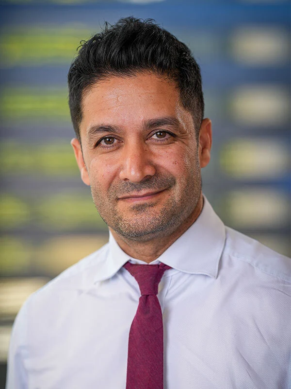
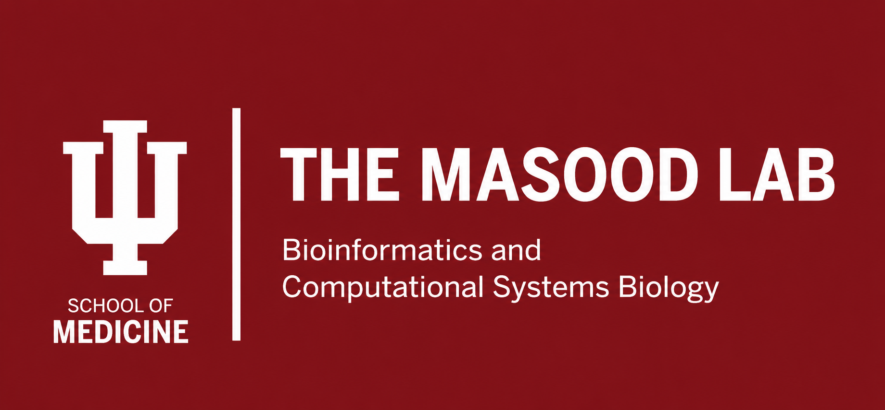

Current Lab Members

Ashiq Masood, MBBS
Principal Investigator
Associate Professor of Medicine

Ateeq M. Khaliq, PhD
Assistant Research Professor of Medicine
Theja Arlagadda



Principal Investigator
Associate Professor of Medicine
Assistant Research Professor of Medicine